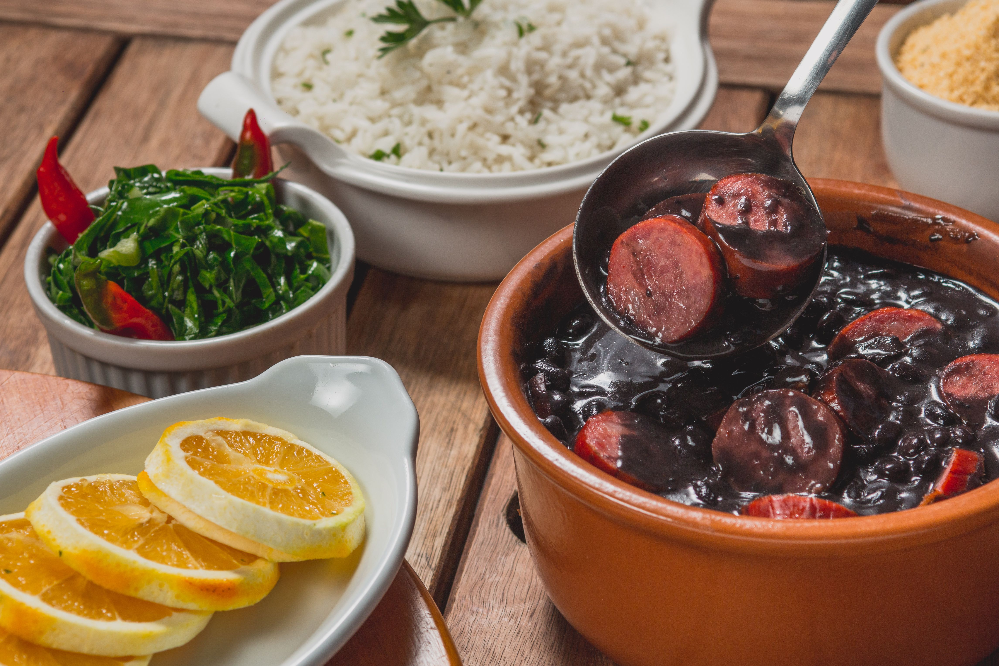
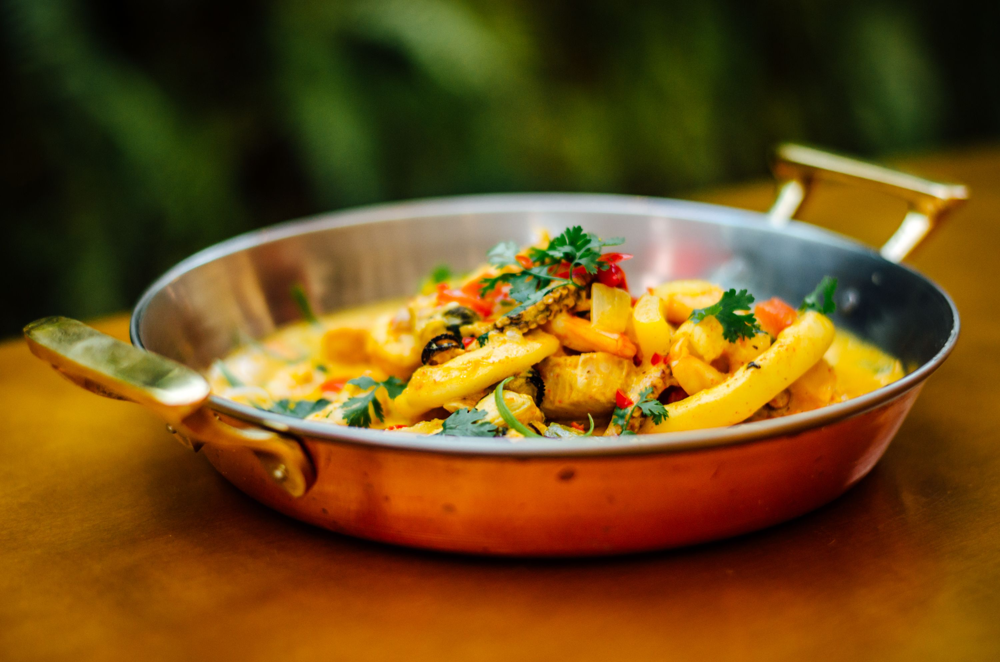
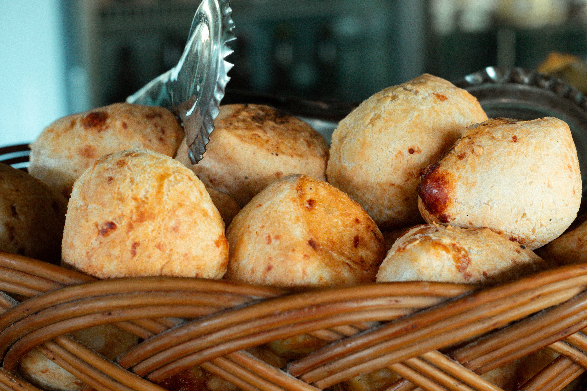

Feijoada brasileña
Un plato tradicional elaborado con frijoles negros y diferentes tipos de carne.
Descubrir la feijoadaDescubre algunos de los platos más representativos de la gastronomía de Brasil. Cada receta refleja la diversidad cultural y culinaria del país.

Un plato tradicional elaborado con frijoles negros y diferentes tipos de carne.
Descubrir la feijoada
Un guiso de pescado preparado con leche de coco, verduras y aceite de dendé.
Descubrir la moqueca
Una especialidad de Minas Gerais, elaborada con almidón de mandioca y queso.
Descubrir el pan de queso